THIẾT KẾ HIỆN ĐẠI Robot có kiểu dáng gọn gàng, tinh tế và thân thiện, phù hợp với nhà hàng, khách sạn, café, trung tâm tiệc cưới và các không gian dịch vụ cao cấp. 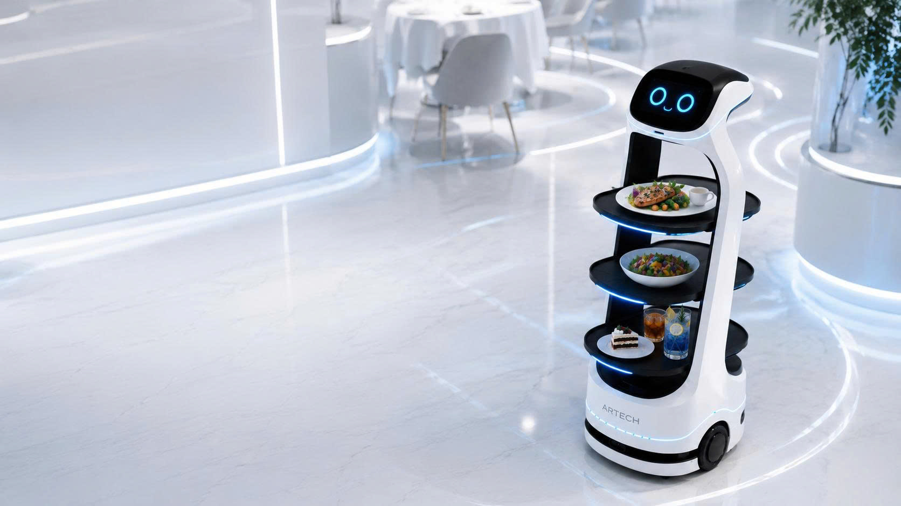
HỆ THỐNG KHAY PHỤC VỤ TỐI ƯU Robot được trang bị nhiều khay chứa chắc chắn, hỗ trợ vận chuyển món ăn, đồ uống và vật phẩm phục vụ đến từng bàn. Thiết kế khay rộng rãi, ổn định, giúp quá trình phục vụ diễn ra liên tục, gọn gàng và hiệu quả hơn. 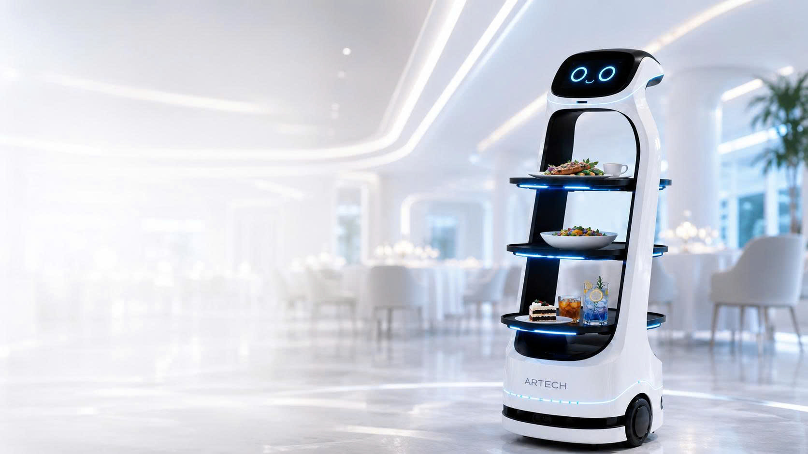
DI CHUYỂN VÀ ĐỊNH VỊ Robot có khả năng tự động di chuyển trong không gian nhà hàng, ghi nhớ vị trí bàn và điều hướng chính xác theo bản đồ đã cài đặt. Giải pháp giúp giảm tải thao tác di chuyển lặp lại cho nhân sự, đặc biệt trong giờ cao điểm. 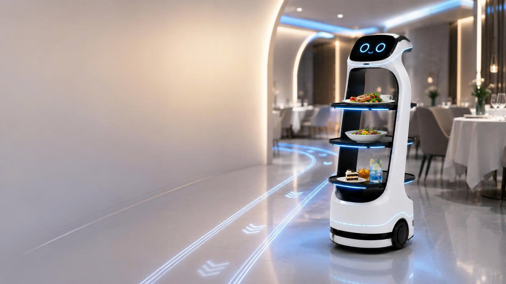
MÀN HÌNH HIỂN THỊ Robot sở hữu một màn hình hiển thị khuôn mặt với biểu cảm thân thiện và một màn hình cảm ứng để hiển thị menu, thông tin món ăn, ưu đãi, mã QR thanh toán hoặc nội dung truyền thông của nhà hàng. 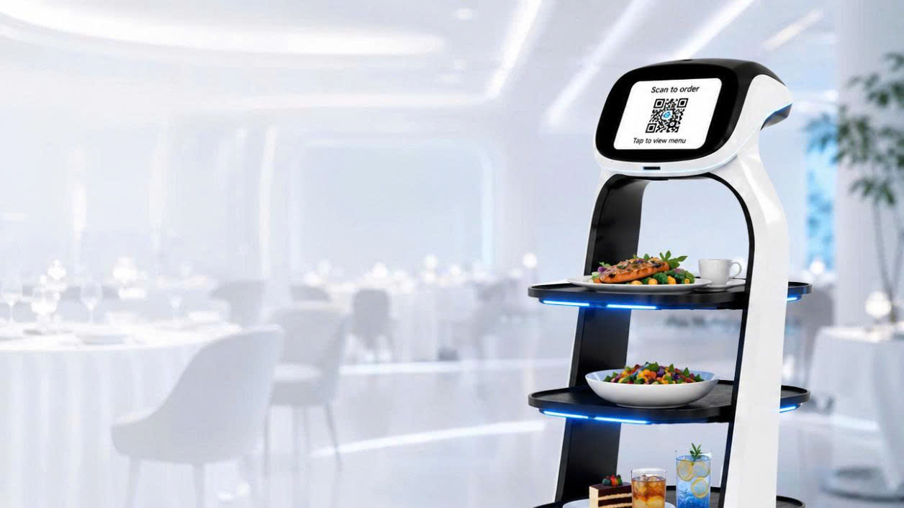
TƯƠNG TÁC VÀ THANH TOÁN Robot có thể hỗ trợ hiển thị mã QR thanh toán, phát lời chào, thông báo món đã đến bàn và hướng dẫn khách lấy món. Các tính năng tương tác giúp trải nghiệm phục vụ trở nên tiện lợi, rõ ràng và hiện đại hơn. 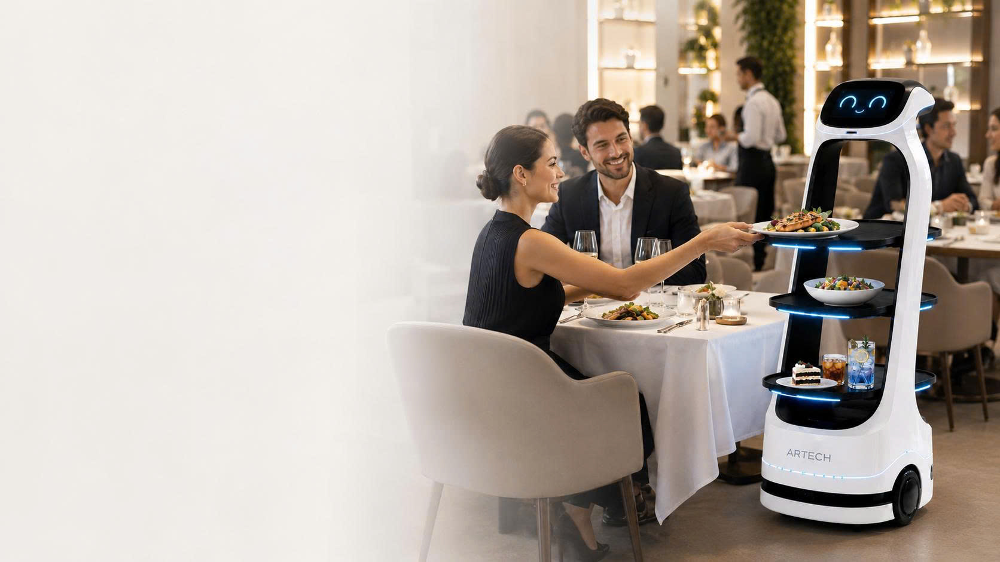
NHẬN DIỆN THƯƠNG HIỆU Robot có thể tùy chỉnh logo, màu sắc, giao diện màn hình, lời chào và nội dung hiển thị theo nhận diện riêng của từng nhà hàng. Điều này giúp doanh nghiệp tạo dấu ấn khác biệt và ghi nhớ tốt hơn trong mắt khách hàng. 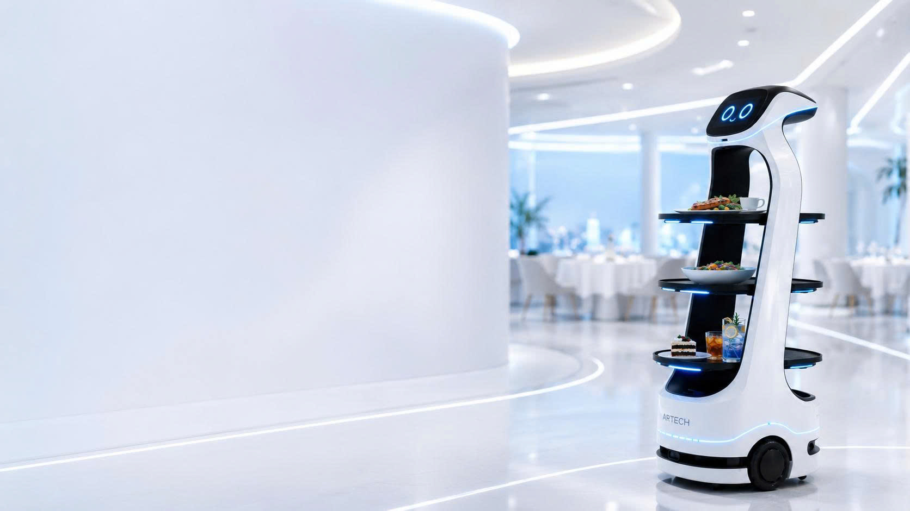
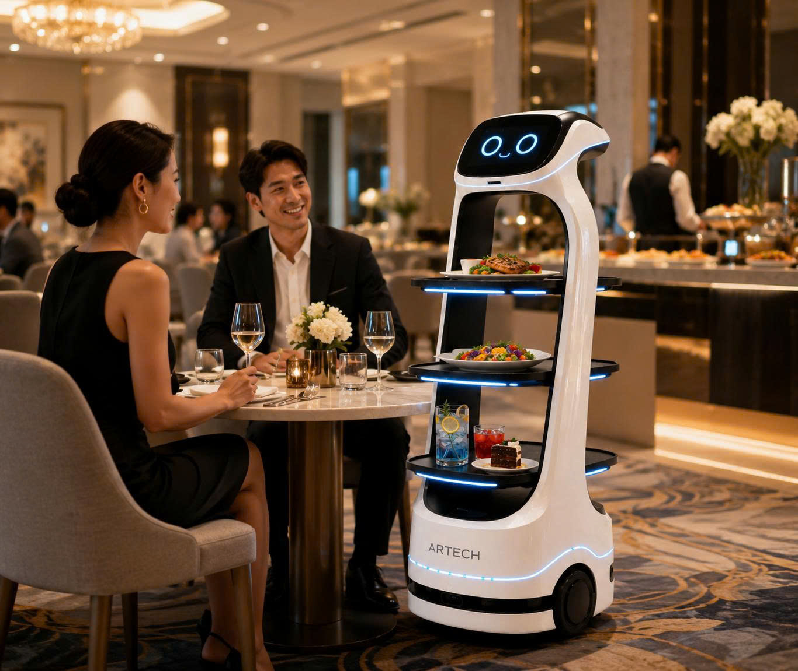 Nhà hàng Hỗ trợ vận chuyển món ăn, đồ uống từ khu vực bếp đến từng bàn của khách hàng, giúp tối ưu quy trình phục vụ và giảm tải công việc lặp lại cho nhân sự.
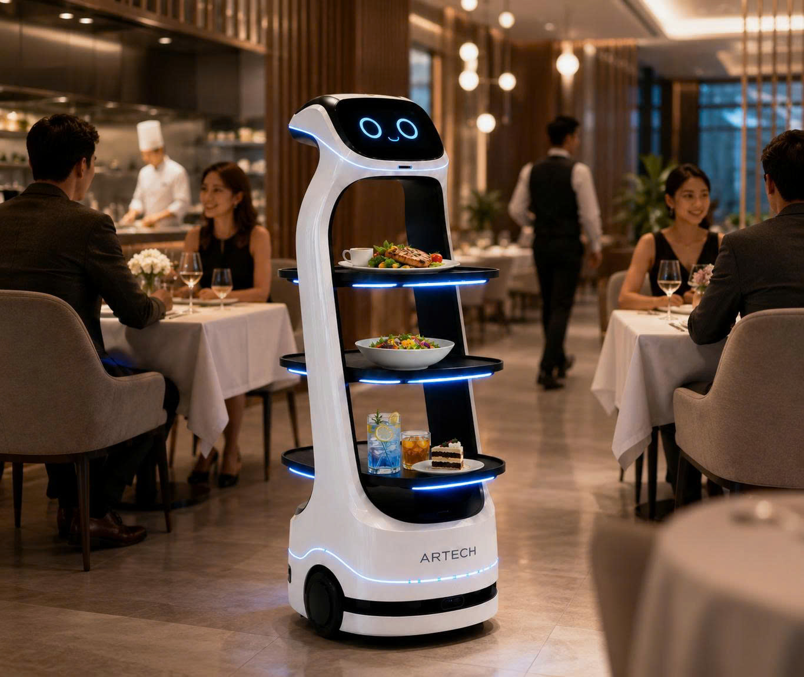 Khách sạn Phù hợp với nhà hàng khách sạn, sảnh tiệc, buffet hoặc khu vực lounge, góp phần nâng cao trải nghiệm dịch vụ và hình ảnh chuyên nghiệp.
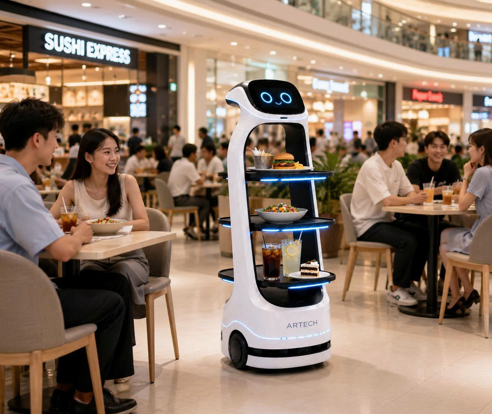 trung tâm thương mại Phù hợp với khu ẩm thực, food court và mô hình dịch vụ đông khách, hỗ trợ điều phối phục vụ hiệu quả và tạo trải nghiệm hiện đại, khác biệt.
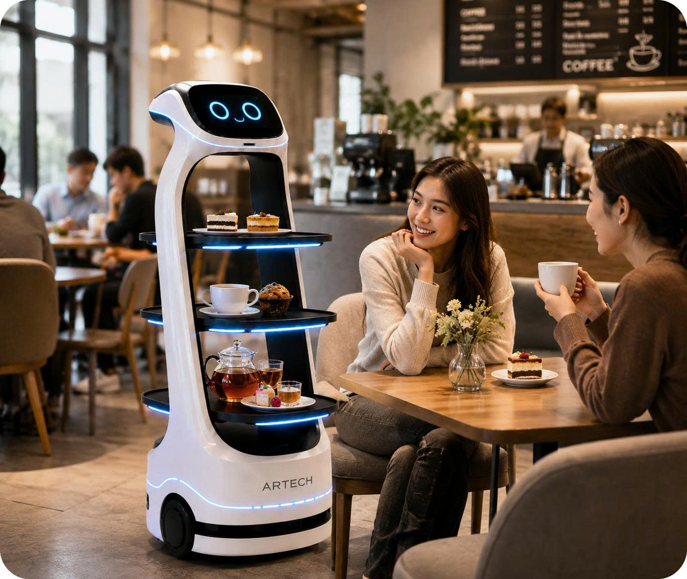 Quán café Tạo điểm nhấn công nghệ trong không gian phục vụ, hỗ trợ giao đồ uống, món nhẹ và tăng trải nghiệm tương tác cho khách hàng.
01 Khảo sát nhu cầu ARTECH Robotics tiếp nhận thông tin về mô hình kinh doanh, mặt bằng, quy trình phục vụ, số lượng bàn, khu vực bếp/quầy và nhu cầu sử dụng robot thực tế.
02 Tư vấn cấu hình phù hợp Dựa trên không gian vận hành, ARTECH Robotics đề xuất cấu hình robot, số lượng khay, nội dung hiển thị, kịch bản giao tiếp và phương án di chuyển phù hợp.
03 Thiết lập điểm phục vụ Các vị trí bàn, khu vực nhận món, khu vực chờ và lộ trình di chuyển được thiết lập để robot có thể hoạt động hiệu quả trong không gian nhà hàng.
04 Tùy chỉnh nội dung thương hiệu Robot được cấu hình logo, lời chào, thông tin món ăn, mã QR thanh toán, chương trình ưu đãi hoặc nội dung truyền thông theo nhận diện của nhà hàng.
05 Kiểm thử vận hành ARTECH Robotics tiến hành kiểm tra khả năng di chuyển, nhận điểm bàn, thao tác giao món, hiển thị thông tin và độ phù hợp với quy trình phục vụ thực tế.
06 Bàn giao và hướng dẫn sử dụng Đội ngũ ARTECH Robotics hướng dẫn nhân viên sử dụng robot, quản lý nội dung, vận hàng ngày và hỗ trợ kỹ thuật trong quá trình sử dụng.
VÌ SAO CHỌNARTECH ROBOTICS? Giải pháp phù hợp với thực tế vận hành tại Việt Nam. Hỗ trợ tùy chỉnh theo không gian và mô hình kinh doanh. Thiết kế hiện đại, dễ tạo điểm nhấn truyền thông. Có thể cá nhân hóa nội dung theo thương hiệu nhà hàng. Tối ưu chi phí so với các giải pháp robot quốc tế tiêu chuẩn hóa. Đội ngũ kỹ thuật đồng hành trong quá trình triển khai và vận hành. Phù hợp với nhà hàng muốn nâng cao trải nghiệm khách hàng mà không làm mất đi yếu tố phục vụ con người.
ROBOT PHỤC VỤPHÙ HỢP VỚI? Nhà hàng có lưu lượng khách lớn. Nhà hàng muốn tối ưu nhân sự phục vụ. Khách sạn, resort, khu nghỉ dưỡng. Quán café, trà sữa, mô hình F&B hiện đại. Trung tâm tiệc cưới, hội nghị, sự kiện. Food court, trung tâm thương mại, khu vui chơi. Doanh nghiệp muốn tạo điểm nhấn công nghệ tại không gian dịch vụ. Thương hiệu F&B muốn tăng trải nghiệm check-in và truyền thông. 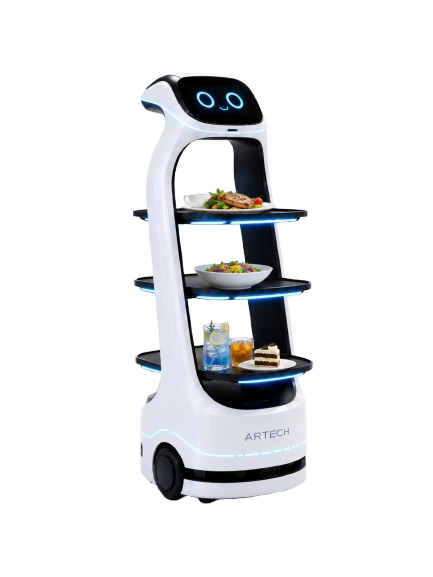